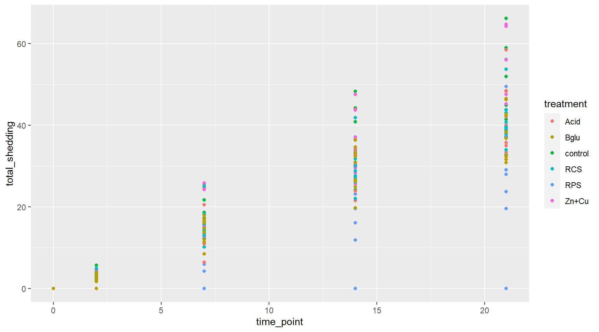
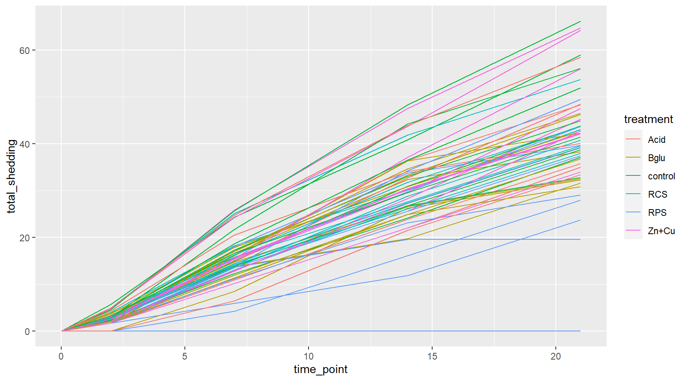
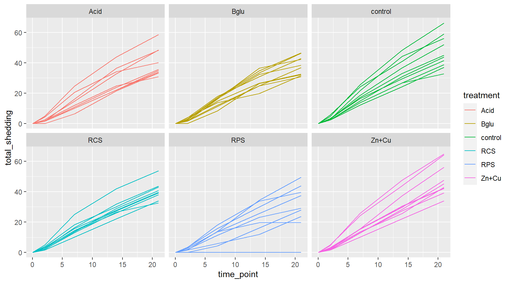
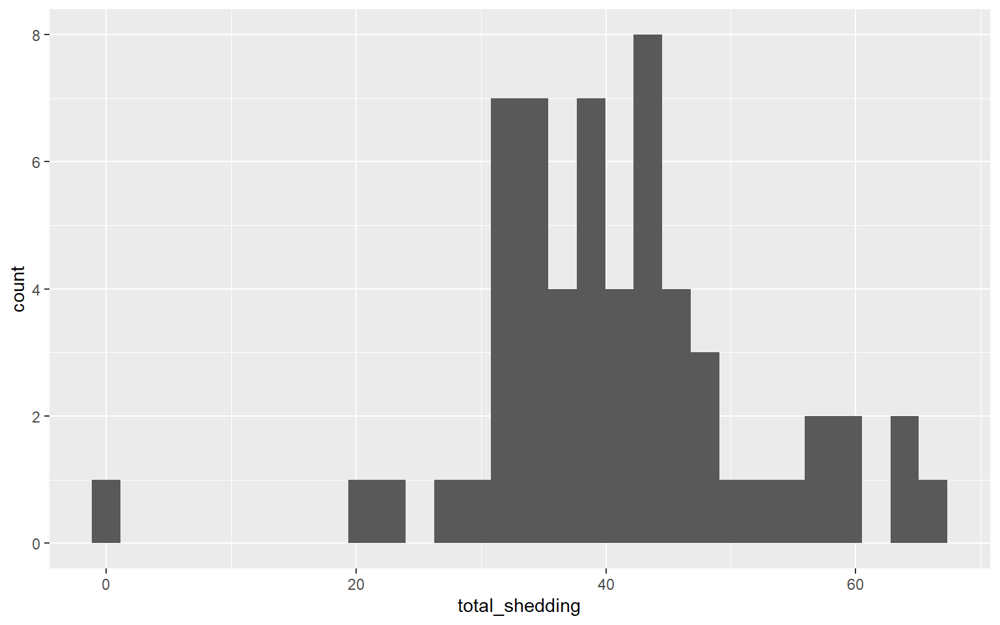
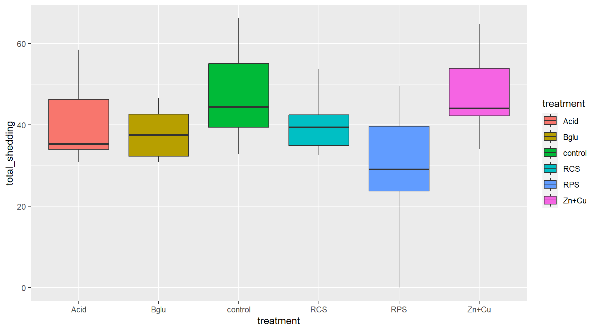
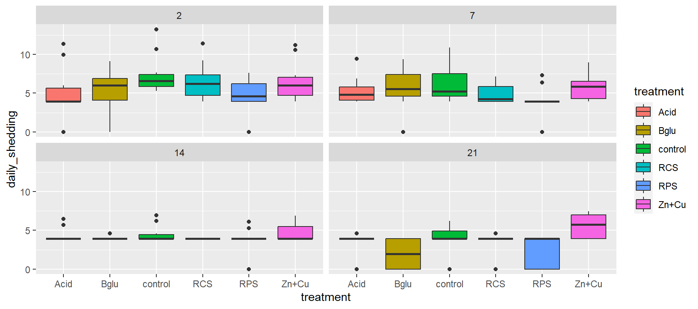

install.packages("tidyverse")
library(tidyverse)Motivating Example
Motivating Example
Kick off the workshop by exploring a real data set using R!
Goal: get the flavor of using R for data management and exploration
Don’t worry about understanding all the coding right away
We will go back and explain how it all works in detail
Follow along using 2-MotivatingExample.R
Tip: Using “#” in your R File to take notes
- Super important to document your code!
Getting Started
Let’s begin by installing and loading tidyverse:
This workshop will focus largely on a group of packages that live together under the name tidyverse.
tidyverse includes the following well known packages:
ggplot2dplyrtidyrreadr- and more!
Salmonella Shedding Data
Fecal Salmonella shedding recorded over the course of 21 days
Several variables were recorded for each pig at certain time points:
- Amount of Salmonella in feces (log10)
- Pig weight (kg)
- Dietary treatment group
Primary Question: Do the different dietary treatments affect Salmonella shedding?
First look at data in R
Let’s use R to look at the top few rows of the Salmonella shedding data set. First, we load the data set using read_csv:
shed <- read_csv("https://unl-statistics.github.io/R-workshops/r-intro/data/daily_shedding.csv")Now, we use the head function to look at the first 6 rows of the data:
head(shed)# A tibble: 6 × 12
pignum time_point pig_weight temp pan_wt wet_wt Dry_wt_pan Dry_weight
<dbl> <dbl> <dbl> <dbl> <dbl> <dbl> <dbl> <dbl>
1 77 2 NA 103. 1.02 1.09 1.31 0.29
2 87 2 NA 104. 1.04 1.02 1.33 0.29
3 122 2 NA 104. 1.02 0.99 1.11 0.09
4 160 2 NA 104. 1.09 1 1.36 0.27
5 191 2 NA 104. 1.03 1.02 1.27 0.24
6 224 2 NA 103 1.08 1 1.39 0.31
# ℹ 4 more variables: percent_drymatter <dbl>, daily_shedding <dbl>,
# treatment <chr>, total_shedding <dbl>Salmonella Shedding Data: Attributes
How big is this data set, and what types of variables are in each column?
str(shed)spc_tbl_ [295 × 12] (S3: spec_tbl_df/tbl_df/tbl/data.frame)
$ pignum : num [1:295] 77 87 122 160 191 224 337 345 419 458 ...
$ time_point : num [1:295] 2 2 2 2 2 2 2 2 2 2 ...
$ pig_weight : num [1:295] NA NA NA NA NA NA NA NA NA NA ...
$ temp : num [1:295] 103 104 104 104 104 ...
$ pan_wt : num [1:295] 1.02 1.04 1.02 1.09 1.03 1.08 1.03 1.09 1.07 1.04 ...
$ wet_wt : num [1:295] 1.09 1.02 0.99 1 1.02 1 1.02 0.99 1.07 1.06 ...
$ Dry_wt_pan : num [1:295] 1.31 1.33 1.11 1.36 1.27 1.39 1.3 1.24 1.38 1.26 ...
$ Dry_weight : num [1:295] 0.29 0.29 0.09 0.27 0.24 0.31 0.27 0.15 0.31 0.22 ...
$ percent_drymatter: num [1:295] 26.61 28.43 9.09 27 23.53 ...
$ daily_shedding : num [1:295] 5.3 5.7 13.22 6.75 5.86 ...
$ treatment : chr [1:295] "control" "control" "control" "control" ...
$ total_shedding : num [1:295] 2.3 2.48 5.74 2.93 2.54 ...
- attr(*, "spec")=
.. cols(
.. pignum = col_double(),
.. time_point = col_double(),
.. pig_weight = col_double(),
.. temp = col_double(),
.. pan_wt = col_double(),
.. wet_wt = col_double(),
.. Dry_wt_pan = col_double(),
.. Dry_weight = col_double(),
.. percent_drymatter = col_double(),
.. daily_shedding = col_double(),
.. treatment = col_character(),
.. total_shedding = col_double()
.. )
- attr(*, "problems")=<externalptr> Salmonella Shedding: Variables
Let’s get a summary of the values for each variable:
summary(shed) pignum time_point pig_weight temp pan_wt
Min. : 6.0 Min. : 0.0 Min. : 9.48 Min. :101.2 Min. :1.000
1st Qu.:119.0 1st Qu.: 2.0 1st Qu.:16.02 1st Qu.:102.4 1st Qu.:1.030
Median :224.0 Median : 7.0 Median :19.78 Median :102.9 Median :1.050
Mean :234.7 Mean : 8.8 Mean :21.01 Mean :102.9 Mean :1.054
3rd Qu.:361.0 3rd Qu.:14.0 3rd Qu.:25.29 3rd Qu.:103.4 3rd Qu.:1.070
Max. :472.0 Max. :21.0 Max. :36.30 Max. :105.2 Max. :1.120
NA's :59 NA's :118 NA's :122
wet_wt Dry_wt_pan Dry_weight percent_drymatter
Min. :0.700 Min. :1.110 Min. :0.090 Min. : 9.091
1st Qu.:1.000 1st Qu.:1.300 1st Qu.:0.250 1st Qu.:24.292
Median :1.020 Median :1.320 Median :0.280 Median :26.923
Mean :1.026 Mean :1.322 Mean :0.268 Mean :26.109
3rd Qu.:1.050 3rd Qu.:1.353 3rd Qu.:0.290 3rd Qu.:28.431
Max. :1.110 Max. :1.460 Max. :0.380 Max. :36.893
NA's :123 NA's :123 NA's :123 NA's :123
daily_shedding treatment total_shedding
Min. : 0.000 Length:295 Min. : 0.000
1st Qu.: 0.000 Class :character 1st Qu.: 1.699
Median : 3.912 Mode :character Median :13.904
Mean : 3.765 Mean :17.423
3rd Qu.: 5.521 3rd Qu.:30.893
Max. :13.218 Max. :66.207
Scatterplots
Let’s look at the relationship between time point and Salmonella shedding.
ggplot(shed, aes(x=time_point, y=total_shedding)) + geom_point()
More Scatterplots
Color the points by treatment groups
ggplot(shed, aes(x=time_point, y=total_shedding, colour = treatment)) + geom_point()
More Scatterplots
Switch to lines for easier reading
ggplot(shed, aes(x=time_point, y=total_shedding, colour = treatment)) + geom_line(aes(group=pignum))
Even More Plots
Add faceting
ggplot(shed, aes(x=time_point, y=total_shedding, color=treatment)) +
geom_line(aes(group=pignum)) +
facet_wrap(~treatment)
Variable Creation and Data Filtering
We will make a new variable in the data: gain = weight at day 21 - weight at day 0.
We will then filter the data to only include the final values.
final_shed <- shed %>%
group_by(pignum) %>%
mutate(gain = pig_weight[time_point == 21] - pig_weight[time_point == 0]) %>% filter(time_point == 21) %>% ungroup() %>% select(-c(4:9))
summary(final_shed$gain) Min. 1st Qu. Median Mean 3rd Qu. Max.
8.22 12.40 14.14 14.16 16.04 18.86 Histogram
Let’s look distribution of the final shedding values with a histogram
ggplot(final_shed) + geom_histogram(aes(x = total_shedding))`stat_bin()` using `bins = 30`. Pick better value with `binwidth`.
One pig did not shed at all…
Which pig, and what treatment did it receive?
final_shed[which.min(final_shed$total_shedding),]# A tibble: 1 × 7
pignum time_point pig_weight daily_shedding treatment total_shedding gain
<dbl> <dbl> <dbl> <dbl> <chr> <dbl> <dbl>
1 97 21 24.9 0 RPS 0 12.9Shedding by Treatment
Look at the average cumulative shedding value for each treatment separately
# Using base `R`:
median(final_shed$total_shedding[final_shed$treatment == "control"])[1] 44.42518# then repeat for each treatment. Or ...
# Using `tidyverse`:
final_shed %>% group_by(treatment) %>%
summarise(med_shed = median(total_shedding))# A tibble: 6 × 2
treatment med_shed
<chr> <dbl>
1 Acid 35.4
2 Bglu 37.6
3 RCS 39.4
4 RPS 29.1
5 Zn+Cu 44.1
6 control 44.4Statistical Significance
There is a difference, but is it statistically significant?
wilcox.test(total_shedding ~ treatment, data = final_shed,
subset = treatment %in% c("control", "RPS"))
Wilcoxon rank sum exact test
data: total_shedding by treatment
W = 75, p-value = 0.01327
alternative hypothesis: true location shift is not equal to 0Boxplots
We could compare the cumulative shedding values of each treatment group with a side by side boxplot
ggplot(final_shed) +
geom_boxplot( aes(treatment, total_shedding, fill = treatment))
Boxplots Again
Alternatively, we could use the original data to compare the daily shedding values of each treatment group with side by side boxplots over time
shed %>% filter(time_point != 0) %>% ggplot() +
geom_boxplot( aes(treatment, daily_shedding, fill = treatment), position = "dodge") +
facet_wrap(~time_point)
Your Turn
Try playing with chunks of code from this session to further investigate the Salmonella shedding data:
Get a summary of the daily shedding values (use the
sheddata set)Make side by side boxplots of final weight gain by treatment group (use the
final_sheddata set)Compute a Wilcox test for control vs. the “Bglu” treatment group